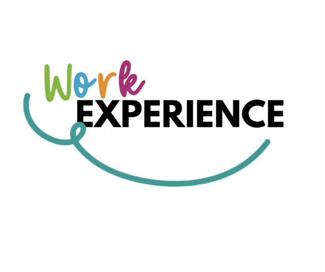
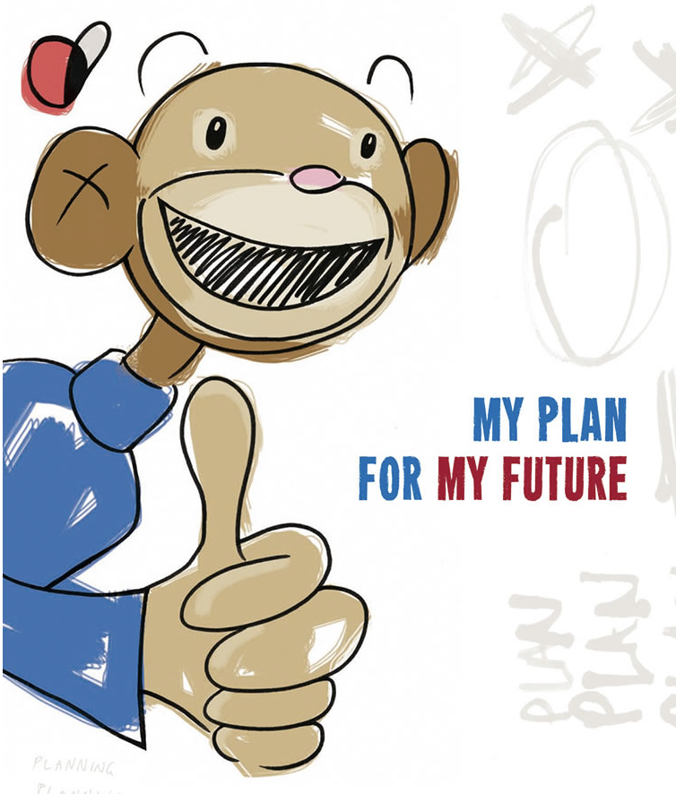

Ruben Sutton - Year 10 Futures
Year 10 Futures
The program is designed to build skills, reflect and make purposeful connections around academic studies, co-curricular experiences, and future pathways.
Projects
Work Experience

As part of our Year 10 Career Development program, all Year 10 students have the opportunity to participate in Work Experience in Week 10 of Term 3.
Pathway Plans

Throughout the Year 10 Futures Program, you will hear about the various pathways available in Years 11/12. Considering your plans post The Friends' School, your interests and your strengths will help guide these decisions, understanding there are also requirements that must be adhered to in order to earn your TCE, IB or ATAR.
Microcreditials
Description